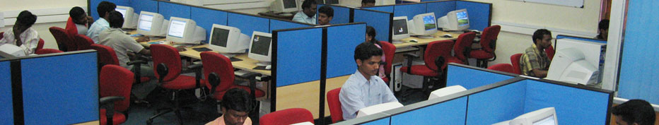

About Department
The Department aims at imparting quality education in Computer Science & Engineering and Information Technology through various post-graduate programmes. It also offers an atmosphere conducive for research scholars for pursuing research in various advanced areas of Computer Science, Engineering and Information Technology.
Entrance Examination
M.Sc.: Computer Science:
The entrance examination is of objective type.
The question paper will consist of 25 questions in general arithmetic and 75 questions from Data Structures and Algorithms, Digital Logic and Computer Organization, Operating Systems, System Software, Microprocessors, SAD, DBMS, Automata, Programming Languages (C & C+) and Recent Trends in Computer Science.
M.C.A.:
Admission to M.C.A. is based on entrance examination.
The entrance examination is of objective type.
The question paper will consist of 100 questions covering the following topics:
Comprehension and verbal ability
Analytical ability
reasoning
Mathematical aptitude (+2) and
General awareness in Computer Science
M.Tech. (Computer Science & Engineering , Network & Internet Engineering):
Admission to M.Tech. is based on entrance examination.
The written examination consists of 100 objective type questions.
Questions will be from the following subjects:
Data Structures and Algorithms, Computer Architecture, Operating Systems, System Software, Microprocessors, DBMS, Networks, Compilers, Automata, AI, Graphics, Software Engineering, Programming Languages (C, C++ and Java) and Recent Trends in Computer Science.
Ph.D.:
Admission to Ph.D. is based on the performance in entrance examination.
The entrance examination is of objective type.
The question paper will consist of 100 questions covering all the relevant topics from Computer Science and Engineering at P. G. level. The NET/JRF qualified candidates with fellowships will be given direct admission to Ph.D programmes. All others (including non-fellowship NET and GATE qualified candidates) will have to appear for the entrance examination.
Placements
The Placement activities of the Department are taken care of by a Placement Cell which comprises of student members and a faculty advisor. The Placement Cell organizes campus recruitment programmes every year and takes pride in facilitating placement for the eligible students in MNCs like IBM, HCL, Wipro, Infosys, TCS, Verizon, HP, ITC, CTS, Honeywell, Patni Computers, iGate, iFlex, etc.
Publication
The Department aims at imparting quality education in Computer Science & Engineering and Information Technology through various post-graduate programmes. It also offers an atmosphere conducive for research scholars for pursuing research in various advanced areas of Computer Science, Engineering and Information Technology.
Programmes Offered
M.Sc. Computer Science.
M.Sc. Five Year Integrated Computer Science
M.C.A.
M.Tech. Computer Science & Engineering.
M.Tech. Network & Internet Engineering.
Ph.D. Computer Science & Engineering [Full-time, Part-time (Internal & External)]
Infrastructure Facilities
The Department is located in the Science & Humanities Block II on the western side of the main campus very near to the Canteen. The department has the largest student intake among all the the departments of the University. There are four post graduate and Ph.d. programmes.
The department has four well-equipped computer laboratories namely- General Computing Lab, Multimedia Lab, Grid Computing Lab and Research Lab, housing about 120 state-of-art computer systems with latest configurations, all connected to various servers running Operating Systems like MS Windows 2003, Red Hat Linux, Sun Solaris and Mac OS. Grid Computing and Cluster Computing have also been facilitated in the servers.
All the faculty,class rooms and laboratories are connected to the campus-wide Intranet. Access to Internet facility (64 Mbps link) is also available. An enhanced multimedia lab of the department is equipped with state- of-art Apple machines with necessary software tools.
Research Activities
The Department hosts research activities in the following disciplines: Extreme Programming, Object Oriented Systems, Software Architecture, Multilingual-Based Systems, Software Agents, Evolutionary Computing, Bioinformatics, Language Engineering, Software Testing, Software Metrics, Real Time Operating Systems, Neural Networks, Distributed databases and Intelligent Information Management.
Student Activities
The Computer Science students association, PIXEL, provides opportunities to sharpen the skills of students by organizing lectures and students meet. The alumni of the department deliver lectures on latest topics periodically for updating the skill sets of the students.
Contact Us
Dr. T. Chithralekha,
Professor & Head, Department of Computer Science,
Pondicherry University,
Puducherry - 605 014.
head.csc@pondiuni.edu.in
2654838
Downloads